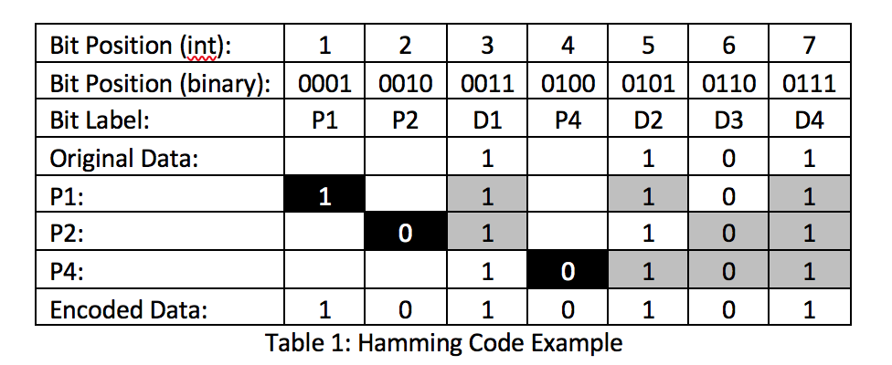

Problem made by Lockheed Martin, is CodeQuest 2017 Problem 12
This problem has a difficulty of 75
Input File: Prob12.in.txt
Output: Your output needs to be directed to stdout (i.e., using System.out.println())
When computer data disruption and corruption cannot be tolerated, such as in scientific or financial computing applications, Error-Correcting Code (ECC) memory can be used to limit the impact of electrical and magnetic interference inside of a computer. One of the most popular ECC techniques is implemented through a hamming code. A hamming code includes a number of extra parity bits in precise locations that allow for the detection and correction of errors. The number of parity bits that you need to add depends on the length of the data you are trying to encode. The general algorithm for creating a hamming code is as follows:
1. Number the bits from left to right starting with the number 1.
2. Label the bit positions with their numbers converted to binary:
a. Bits whose position numbers are powers of 2 (1, 2, 4, etc.) are the parity bits. Notice that these are the positions where there is a single 1 in the binary representation of the bit position number. This is the key to calculating the value of the parity bits.
b. All other bits are the data bits.
3. Fill in the data bits with the original data.
4. Calculate the value of the parity bits. For this problem, we will be using even parity.
a. Parity is calculated by adding the value of each checked bit. If the value is even, the parity is 0; if the value is odd, the parity is 1.
b. Parity bit 1 checks all bit positions which have the least significant bit set to 1 (1, 3, 5…)
c. Parity bit 2 checks all bit positions which have the second least significant bit set to 1 (2, 3, 6…)
d. Parity bit 4 checks all bit positions which have the third least significant bit set to 1 (4-7, 12-15…)
Example hamming code:
Suppose we had an original input of 1101, and we wanted to create the hamming code for this set of bits. We would do the following:
1. Calculate the number of parity bits we need. Remember that the parity bits are in the bit positions that are a power of two. You can notice from the table below that adding a parity bit at position M gives us an additional M-1 data bits that we can encode. For this example, we have 4 data bits. Parity bit 1 does not give us any data bits. Parity bit 2 gives us one data bit, and parity bit 4 gives us three more. Thus, we need 7 bits total: 3 for parity, and 4 for data.
2. Calculate the values of the parity bits using the algorithm above. The table below shows the bits considered when calculating each parity bit.

For each parity bit calculation, the parity bit’s position is highlighted black, and the bits used to calculate it are highlighted grey. Looking at parity bit 2, its position number in binary is 0010, so it only cares about positions that fit the pattern xx1x, where the x could be either a 0 or a 1. Positions 3, 6, and 7 fit this pattern. Two of the three of those data bits are 1, so the parity bit’s value is 0 because there are an even number of 1 values in the data for that parity bit.
The first line of the file Prob12.in.txt will contain a positive integer T denoting the number of test cases that follow. Each test case will have the following input:
• The first line of each test case will contain a positive integer N denoting the number of binary numbers that follow.
• The next N lines will contain binary numbers, one per line. You will not know the length of each number beforehand.
2
1
1101
3
01001101
11011101
10011010
For each binary number read, your program should output the hamming code for that number.
1010101
010010011101